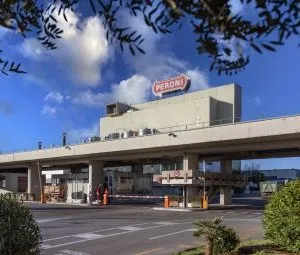
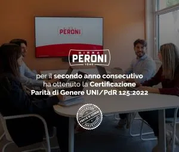
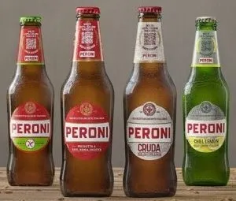
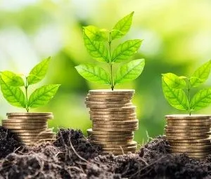
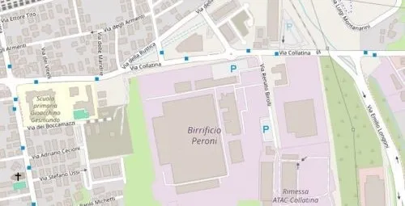

L'azienda
GLI STABILIMENTI
Con una produzione annua di oltre 7 milioni di ettolitri, 2 per il mercato estero, Birra Peroni è una delle più grandi aziende del paese con un marchio che è diventato un simbolo mondiale del Made in Italy grazie alla passione di oltre 800 persone che ne fanno parte, tra uffici, forza vendita, 3 stabilimenti – Bari, Roma, Padova – e lo stabilimento di maltazione a Pomezia.
Un gruppo coinvolto e unito dal desiderio di produrre qualità e unicità, per offrire ai consumatori momenti ed emozioni da vivere. Il birrificio italiano ha fondato lo Sviluppo Sostenibile su quattro pilastri: Persone, Pianeta, Portafoglio e Profitto.
People
LE PERSONE: L'INGREDIENTE PRINCIPALE
Birra Peroni è la prima nella categoria della birra a ottenere la Certificazione di Parità di Genere UNI/PdR 125:2022, lo standard che fornisce linee guida sul sistema di gestione della parità di genere, avendo implementato un sistema di monitoraggio efficace attraverso indicatori di Performance ad hoc (KPI).
WELFARE & WELLBEING AL CENTRO
L'azienda incoraggia uno stile di vita felice e sano per i suoi dipendenti, affinché possano organizzare la loro giornata nel modo che funziona meglio per loro ed è molto orgogliosa del loro programma di congedo parentale e lavoro agile (lavoro flessibile).
Planet
EFFICIENTAMENTO ENERGETICO
Nel corso degli anni, l'azienda ha sviluppato sistemi di produzione sempre più efficienti, in grado di produrre lo stesso output utilizzando meno energia. L'impegno di Birra Peroni è di essere Carbon Neutral nei nostri birrifici entro il 2030.
Attraverso sforzi costanti operiamo tutti i giorni per trovare misure di efficienza energetica e lavorare verso l'adozione di energie rinnovabili.
Birra Peroni aspira a non portare rifiuti in discarica entro il 2030. Ad oggi, il 99,8% dei rifiuti provenienti dai cicli produttivi, pari a 11 mila tonnellate, viene avviato a recupero tramite riciclo o riutilizzo.
Portfolio
INNOVAZIONE E SVILUPPO SOSTENIBILE
Cinque milioni di euro sono stati investiti da Birra Peroni in un nuovo impianto per birra analcolica presso il suo stabilimento di Roma nel 2021. L'intenzione di questo reinvestimento è di aiutare a sostenere l'ambizione di aumentare l'efficienza della produzione e ampliare il portafoglio di offerta nella direzione dell'ambizione del gruppo verso bevande a basso contenuto alcolico o analcoliche. In generale, tutti i processi di innovazione, tra cui quelli su nuovi prodotti o nuovi segmenti di imballaggio, sono sottoposti ad analisi specifiche nel campo dello sviluppo sostenibile per conoscere le previsioni degli impatti ambientali e sociali già nella fase di progettazione della proposta.
Profit
IL 2023 DI BIRRA PERONI
Considerando il totale del mercato, moderno e fuori casa nel suo insieme, Birra Peroni ha concluso l'anno con una quota di valore del 15,3%, in aumento di 0,4 punti rispetto al 2022.
Per il canale moderno (supermercati, ipermercati e discount), Birra Peroni ha guadagnato in quota di valore (+0,2 punti) e in quota di volume (+0,3 punti), raggiungendo rispettivamente il 14,3% e il 14,2%.
Sul canale fuori casa (Bar, Ristoranti, Pizzerie), Birra Peroni ha registrato un notevole +0,9 punti in quota di valore rispetto all'anno precedente, totalizzando ora il 16,4%.
Il Report
Il documento rappresenta il Rapporto Sviluppo Sostenibile 2023 (anche "Bilancio") di Birra Peroni S.r.l., redatto su base volontaria al fine di descrivere le attività, le iniziative e i principali risultati conseguiti in merito ad aspetti economici, ambientali e sociali. Il Bilancio si riferisce al periodo dal 1° gennaio al 31 dicembre 2023. Con l'obiettivo di condividere con gli stakeholder le informazioni più significative in merito al percorso di sviluppo sostenibile intrapreso, il documento fornisce un'immagine completa della strategia, del modello di business e operativo, della governance e delle performance ambientali, sociali ed economiche dell'azienda,nonché della sua capacità di creare valore nel medio e lungo termine.
Scarica il Report di Sostenibilità 2023Legacy 2030
Attraverso Legacy 2030, il Gruppo ha orientato la sua strategia verso la sostenibilità a lungo termine e sta anche contribuendo agli Obiettivi di Sviluppo Sostenibile stabiliti nel 2015 nell'ambito delle Nazioni Unite. Abbiamo identificato questi obiettivi in base a dove possiamo fare la maggiore differenza, utilizzando ciò che possiamo fare come azienda e ciò che possiamo fare insieme, con tutti gli stakeholder. Al fine di comunicare le informazioni più rilevanti agli stakeholder sul percorso di sviluppo sostenibile, il testo offre una visione complessiva della strategia di governance, nonché delle prestazioni ambientali, sociali, economiche e della capacità di generare valore, a medio e lungo termine.
Scarica Legacy 2030Gli Obiettivi di Sviluppo Sostenibile
Scopri i principali SDG (Sustainable Development Goals) su cui Birra Peroni concentra i propri sforzi per contribuire all'Agenda 2030 delle Nazioni Unite.
| Traguardo di Sviluppo Sostenibile | Impegno di Birra Peroni ⬇ scorri verso il basso per vedere tutti gli obiettivi ⬇ |
|---|---|
| SDG 2 - Sconfiggere la Fame | Garantire sistemi di produzione alimentare sostenibili attraverso pratiche agricole resilienti e l'approvvigionamento sostenibile al 100% entro il 2030 |
| SDG 3 - Salute e Benessere | Promuovere scelte responsabili con l'obiettivo di raggiungere il 20% di quota di prodotti senza alcol entro il 2030. |
| SDG 5 - Uguaglianza di Genere | Garantire parità di genere nella leadership aziendale, con l'impegno di raggiungere la piena parità tra uomini e donne entro il 2030. |
| SDG 6 - Acqua Pulita | Ottimizzare l'uso dell'acqua riducendo il consumo a 2,75 litri di acqua per litro di birra prodotta entro il 2030. |
| SDG 7 - Energia Pulita | Raggiungere la neutralità carbonica nei birrifici entro il 2030 con una riduzione del 30% delle emissioni di CO2. |
| SDG 12 - Consumo Responsabile | Implementare packaging 100% riutilizzabile o completamente riciclabile entro il 2030 e ridurre a zero i rifiuti in discarica. |
Contatti
Per ulteriori informazioni sul nostro impegno per la sostenibilità, contattaci:
Email: sustainability@birraperoni.it
Telefono: +39 06 123456789
Indirizzo: Strada della Sostenibilità, 2030 - 00100 Roma
Uffici Commerciali: Via Milanofiori, Palazzo F4 - 20090 Assago (MI)